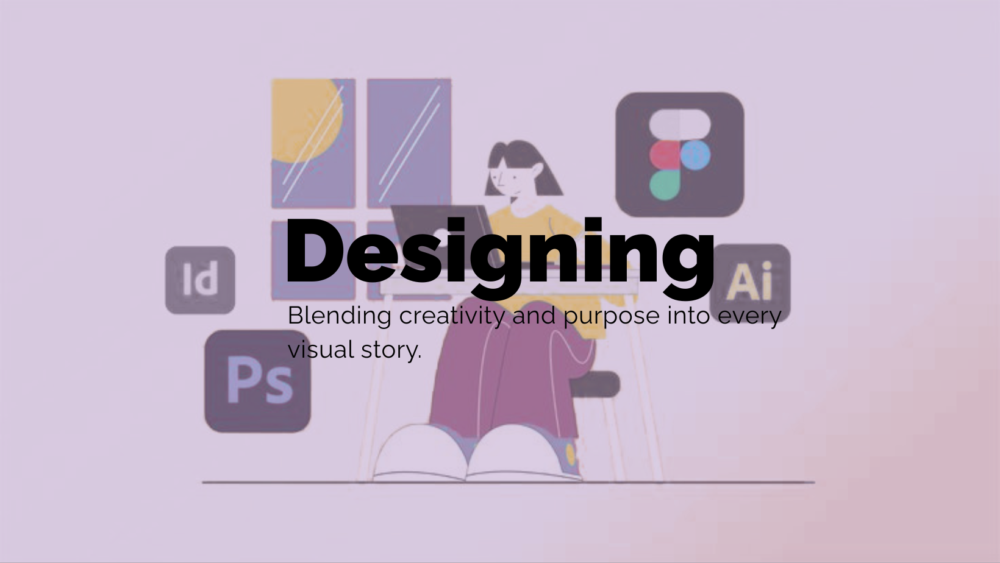
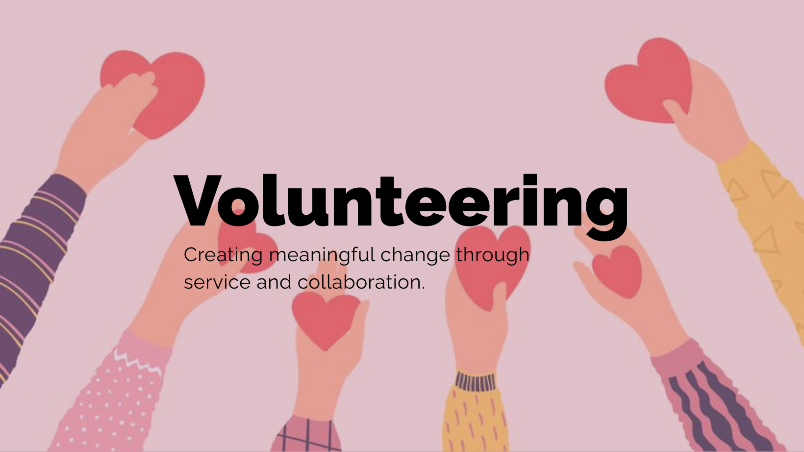
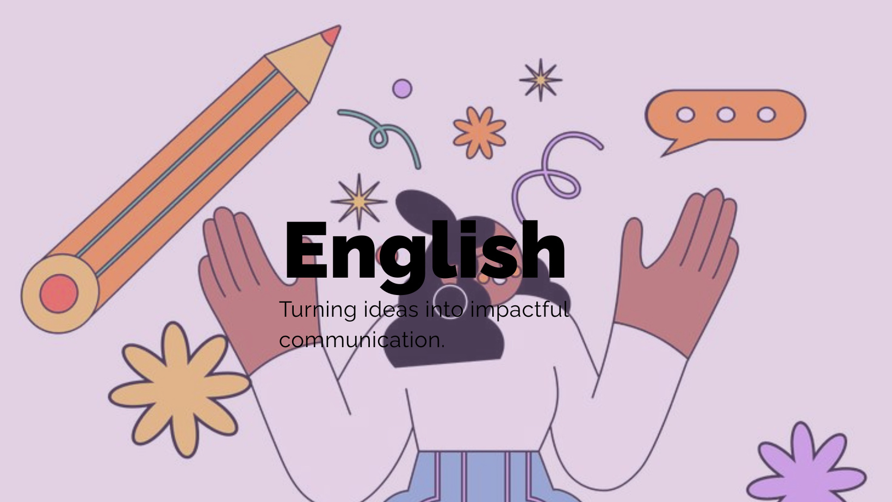

Business Analyst · IT Undergraduate
Final year IT undergraduate & Experienced Business Analyst Intern, passionate about bridging the gap between business needs and technology.
About me
I'm Nishiki, a final year IT undergraduate at Sabaragamuwa University of Sri Lanka with hands-on experience as a Business Analyst intern. I love untangling complex processes and translating them into clear, actionable insights.
I thrive at the intersection of people, process, and technology — always asking "why" before jumping to "how."
Capabilities
Selected work
App Development
E-Tickz is a mobile application revolutionizing bus season ticket management, offering seamless access to tickets, routes, and renewals.
Process Modeling
This system enables users to schedule appointments at their convenience, anytime. By offering a user-friendly experience, the app saves both time and money for our clients.
Stakeholder Analysis
Describe what you analysed, what tools you used, and the outcome.
Wireframing
Describe what you designed and the business problem it addressed.
More about me
I'm more than just a Business Analyst — here's what else keeps me inspired.

From UI mockups to visual content, I love bringing ideas to life through design. Creating things that are both functional and beautiful is something I'm deeply passionate about.

Giving back to the community is close to my heart. Through volunteering I've developed leadership, empathy and teamwork skills that shape how I work every day.

I teach English and write content that makes the language feel approachable and fun. Helping others communicate confidently is something I find incredibly rewarding.
Find me on
Get in touch
Open to full-time BA roles and exciting new opportunities.